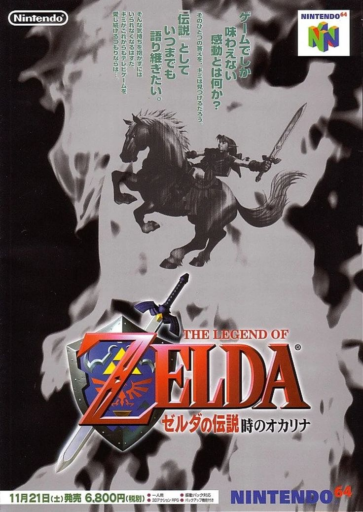
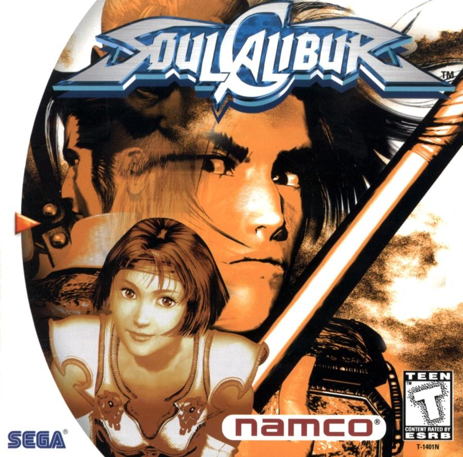
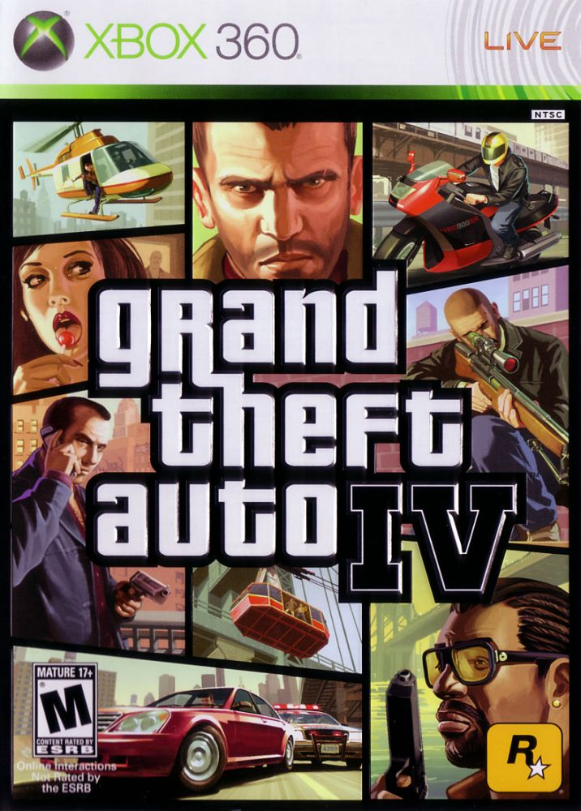

Zelda: Ocarina of Time
Quando menino, Link é enganado por Ganondorf, o Rei dos Ladrões Gerudo. O humano malvado usa Link para obter acesso ao Reino Sagrado, onde coloca suas mãos contaminadas na Triforce e transforma a bela paisagem de Hyrulean em um deserto árido. Link está determinado a resolver os problemas que ajudou a criar, então com a ajuda de Rauru ele viaja no tempo reunindo os poderes dos Sete Sábios.
SoulCaliburbrbr
Soulcalibur, o jogo com maior Metascoring no Dreamcast, voltou para a próxima geração. Afie suas lâminas enquanto revive antigos rancores contra adversários clássicos em novos gráficos de alta definição. Prove seu valor contra o mundo com uma variedade de tabelas de classificação abrangendo todos os personagens e modos, ou desafie um amigo no modo Versus de jogo local. Dezenove personagens jogáveis: Todos os seus lutadores favoritos estão de volta, incluindo Kilik, Ivy, Siegfried, Edge Master, Nightmare e muitos mais. Oito modos de jogo: Experimente os diferentes modos de jogo, incluindo Story, Versus e até mesmo o Museum Mode, que permite aos jogadores visualizar obras de arte, modelos de personagens e animações. Abundância de tabelas de classificação: compare estatísticas em sessenta tabelas de classificação abrangendo cada personagem e modo. Suporte de alta definição: Soulcalibur recebeu uma nova camada de tinta bonita para suportar resoluções HD de até 1080p.
Grand Theft Auto IV
O que o sonho americano significa hoje? Para Niko Belic, recém-saído do barco da Europa. É a esperança de que ele possa escapar de seu passado. Para seu primo, Roman, é a visão de que juntos eles podem encontrar fortuna em Liberty City, porta de entrada para a terra das oportunidades. À medida que contraem dívidas e são arrastados para um submundo do crime por uma série de vigaristas, ladrões e sociopatas, eles descobrem que a realidade é muito diferente do sonho em uma cidade que adora dinheiro e status, e é o paraíso para quem os possui. um pesadelo vivo para aqueles que não o fazem.
Super Mario Galaxy

O maior herói da Nintendo está dando o passo final... no espaço. Junte-se a Mario enquanto ele inaugura uma nova era nos videogames, desafiando a gravidade em todos os planetas da galáxia. Quando alguma criatura foge para o espaço com a Princesa Peach, Mario dá início à perseguição, explorando planetas bizarros por toda a galáxia. Mario, Peach e inimigos novos e antigos estão aqui. Os jogadores correm, saltam e lutam contra inimigos enquanto exploram todos os planetas da galáxia. Uma vez que este jogo faz pleno uso de todas as funcionalidades do Comando Wii, os jogadores têm de fazer todo o tipo de coisas para terem sucesso: premir botões, balançar o Comando Wii e o Nunchuk, e até apontar e arrastar coisas com o ponteiro. Como está no espaço, Mario pode realizar saltos alucinantes, diferente de tudo que já fez antes. Ele também terá uma variedade de novos movimentos, todos baseados em inclinar, apontar e sacudir o Wii Remote. Agite, incline e aponte! Mario aproveita todos os aspectos únicos do Wii Remote e do controle Nunchuk, liberando novos movimentos conforme os jogadores agitam o controle e até apontam e arrastam itens com o ponteiro.
Super Mario Galaxy 2

Super Mario Galaxy 2, a sequência do jogo original que salta por galáxias, inclui a exploração baseada na física que desafia a gravidade do primeiro jogo, mas está repleto de galáxias e recursos totalmente novos para desafiar os jogadores. Em alguns estágios, Mario pode formar dupla com seu amigo dinossauro Yoshi e usar sua língua para pegar itens e cuspi-los nos inimigos. Os jogadores também podem se divertir com novos itens, como uma furadeira que permite que nosso herói faça um túnel através de rocha sólida.